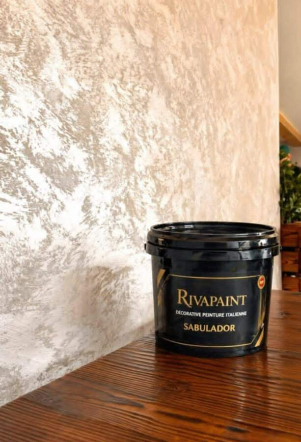
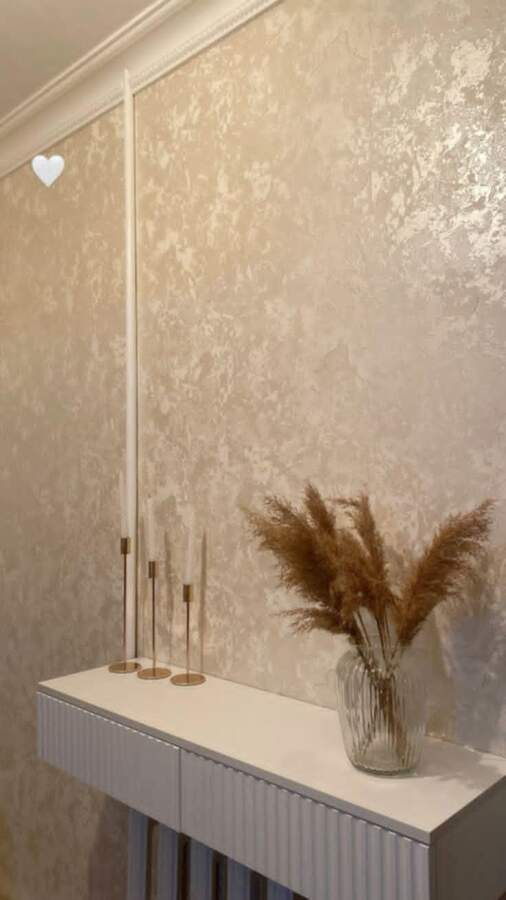

Sabulador
Un grain sablé fin et texturé, qui apporte du caractère aux murs tout en restant doux au toucher.
Peintures décoratives italiennes — Kairouan
Rivapaint est revendeur à Kairouan de la gamme Rivapaint : des finitions décoratives italiennes appliquées à la main — Sabulador, Anticerra, Stuc et Artico — pour des murs qui ont du relief et du caractère.

Chaque finition Rivapaint est posée à la main, en plusieurs couches, pour révéler une profondeur qu'aucune peinture plate ne peut imiter.

Un grain sablé fin et texturé, qui apporte du caractère aux murs tout en restant doux au toucher.

Un effet marbre minéral, moucheté de reflets dorés, décliné en plusieurs teintes neutres.

Un enduit lissé à la spatule, qui capte la lumière comme une pierre polie.

Un effet granité dense, aux éclats contrastés, pour un rendu proche du terrazzo.
Application manuelle, par des artisans formés aux techniques italiennes traditionnelles.
Chaque teinte et chaque texture est ajustée à votre espace, lors d'un échantillon préalable.
Un showroom et un atelier basés à Kairouan, pour vous conseiller et réaliser vos échantillons.
Parlons de votre espace : nous vous proposons une sélection de finitions Rivapaint et un échantillon avant tout engagement.